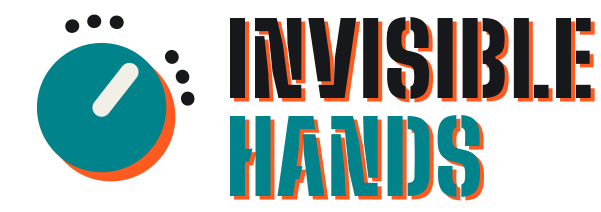

hands.tag(id) returns a small SVG, 1.05 em square, that keeps itself up to date. Put it right after the control’s label.
In a toolbar
toolbar.append(hands.badge());
hands.badge() is a button with the mark and “Hands · 2”. Clicking it opens the panel (rooms, invite link, the off switch). Or draw the mark yourself with InvisibleHands.icon({ size: 24 }).
The partsMark, words, inks

96482416 · mini12 · minione ink
Below 20 pixels the fingertips blur, so use the mini (no fingertips, fatter pointer). The one-ink version is for stamps, embroidery and anywhere colour can’t go.
Teal#00838A · on dark #2FB3B0
Flame#FF5A1F · on dark #FF7A45
Toner#16181B
Paper#F2EFE6
Type: a stencil display face (Big Shoulders Stencil, heavy, capitals), Spline Sans for reading, Courier Prime for labels. Two inks on paper, the second a hair out of register, as in megaZINE, but megaZINE prints blue and pink.

 96
96